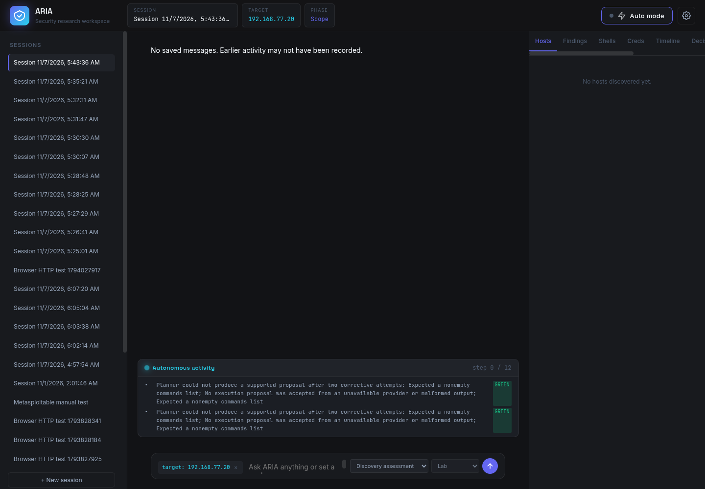
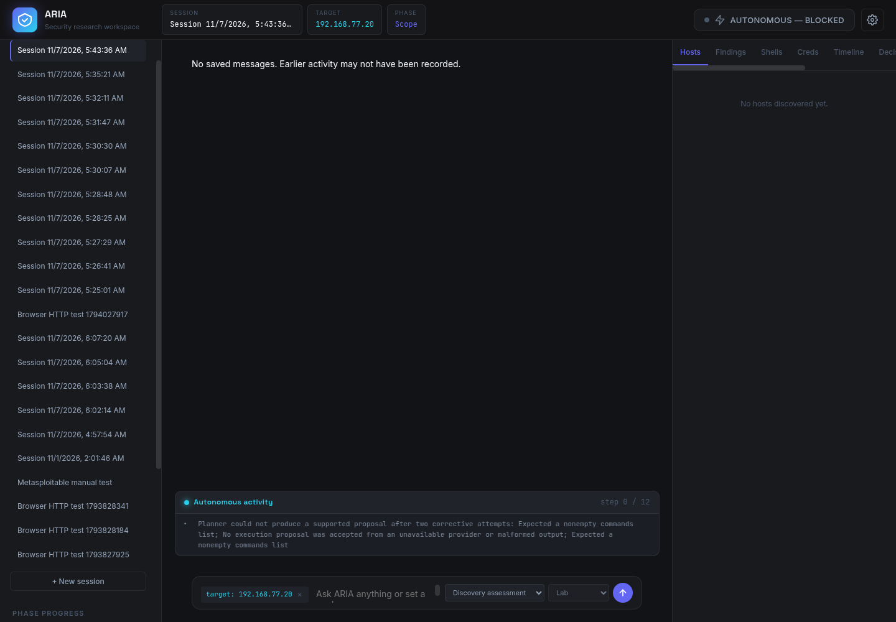

ARIA HTTP Autonomy Benchmark
Black-box evaluation using visible Chromium and ARIA’s real local UI. Run date: 7 November 2026. The 900-second ceiling was not extended or restarted.
Executive summary
ARIA accepted a normal discovery run for the authorized local target, then stopped before its first step with blocked / invalid_planner_output. The backend recorded three logical planning attempts, no accepted proposal, no successful steps, no evidence job IDs, no worker jobs, and no findings. The planner error says it could not produce a nonempty command list after corrective attempts and that no proposal was accepted from an unavailable provider or malformed output.
The test honored the user’s instruction to make no paid model calls. The session had no model-usage/reservation record; the model-attempt decision count and worker-job count were both zero. The test therefore measures the real blocked flow, not successful model-driven vulnerability discovery.
No issue was found that required modifying Kali or Metasploitable. Neither VM nor its configuration was changed.
Environment and configuration
| ARIA | http://localhost:7000; host readiness returned HTTP 200; real local services, no mocked routes. |
|---|---|
| Browser | Playwright-controlled Chromium, headless: false, visible desktop window. |
| Target | Existing Metasploitable 2 VM at 192.168.77.20, on the isolated aria-lab network. Existing lab documentation identifies the image as Metasploitable 2 and records 1 GiB RAM and one vCPU. No target changes were made. |
| Target ground truth | Incomplete for this benchmark. Rapid7’s Metasploitable 2 setup guide documents an intentionally vulnerable test VM and setup, but does not enumerate the exact HTTP flaw set for this configured image. No vulnerabilities were manually investigated during this run. |
| Worker limits | Existing worker documentation lists curl and TCP Nmap, a one-CPU/256 MiB job limit, and an allowlist for 192.168.77.20/32 on TCP 21, 22, 80, 139 and 445. A basic GET to the worker root returned 404 (no root route); ARIA’s autonomous-start capability lookup succeeded. No worker job was created in this run. |
| Mode | Native autonomous discovery; 12-step ceiling; green_only risk threshold; target scope contains only 192.168.77.20. |
| Provider cost | No paid calls authorized or made. ARIA session usage metadata was empty; no model_attempt decision record or provider reservation was present. |
| Resource measurement | Per-job resource limits are documented above. Actual host CPU and memory consumption were not sampled; N/A. |
Basic readiness relied on current HTTP readiness checks and prior retained local evidence for the ARIA-to-worker path. This benchmark emitted no target requests: the separate worker receipt query for this session returned an empty list. Target-side access logs were not sampled.
Methodology and autonomy
The evaluator logged into ARIA through its UI, created a fresh target session through the native session dialog, selected the ordinary Discovery assessment goal, left automatic execution at the conservative green-only threshold, and clicked AUTO. The timer origin is the browser’s monotonic timestamp at the outgoing autonomous-start POST. No target hints, payloads, commands, source code, or findings were supplied.
During the run, the evaluator only observed the UI. The planner reached a terminal blocked state before an execution step or worker dispatch. The controller ended observation after confirming the early terminal UI state; the benchmark timer was not restarted. The backend’s durable transition gives the actual run duration.
| Human / external involvement | Observed |
|---|---|
| Human setup and start | One UI setup/start sequence (login, target creation, ordinary mode selection, start). |
| Discovery assistance during run | 0 interventions; no payload, command, endpoint, or interpretation supplied. |
| Paid model calls | 0, by user instruction and backend accounting. |
| ARIA-originated target requests | 0 worker jobs; target request count inferred from the worker ledger. Target-side logs were not sampled. |
Evidence labels and limits
| Evidence type | What this report treats as evidence |
|---|---|
| Observed UI facts | Captured visible-Chromium screenshots, DOM status, UI network responses, browser console and page-error records in run.json. |
| ARIA diagnostic | The text that no supported nonempty plan was produced after corrective attempts. This is ARIA’s explanation of its failure, corroborated by its persisted blocked state and zero-step activity record. |
| Independent backend verification | Read-only application database and separate worker-ledger queries: blocked terminal snapshot, zero findings, zero worker jobs/receipts, empty session usage and no model-attempt records. |
| Inference | ARIA-originated target request count is reported as zero because the worker ledger has no job for this session. Target-side access logs were not sampled. |
| Unverified / unknown | Exact HTTP vulnerability ground truth for the running target image; host CPU and memory during the 0.247-second run; target-side request logs. |
The durable autonomous snapshot’s model_calls=3 counts logical planner attempts. It is not a provider-call count. Provider reservations and model_attempt audit records were both zero.
Timeline
| UTC | Elapsed | Event / evidence |
|---|---|---|
| 05:43:37.690232 | 0.000 s | Browser issued POST /api/pentest/{session}/autonomous/start. Timer began. The target session was already created through the UI. |
| 05:43:37.744001 | ~0.054 s | Durable autonomous state entered planning. |
| 05:43:37.934554 | 0.244 s | Backend emitted terminal auto_complete with the planner failure message. |
| 05:43:37.937586 | 0.247 s | Durable state became blocked / invalid_planner_output; 0 successful steps, no evidence job IDs. |
| 05:43:43.200810 | 5.393 s | Visible UI polling observed the terminal “Auto mode” state and captured final screenshot. The extra observation delay did not extend the autonomous run. |
Findings and metrics
| Measure | Result | Basis |
|---|---|---|
| Confirmed unique vulnerabilities | 0 | No findings were produced; ARIA never executed a target action. |
| False positives | 0 reported | Nothing was reported to classify. |
| Precision | N/A | No reported candidates; denominator is zero. |
| Recall | N/A | The target’s exact, version-specific HTTP ground truth is not available in the local benchmark record. |
| Discovery rate | 0 / 0.00412 min | 0 confirmed findings divided by 0.247 seconds. Numerically 0; not evidence of useful throughput. |
| Unique endpoints | 0 | No crawler or HTTP request was launched. |
| Time to first confirmed discovery | None | No discovery occurred. |
| Worker tool failures | 0 | No worker job was submitted. Planner failure is counted separately. |
| Crashes / blocked states | 1 blocked | invalid_planner_output; application remained available. |
Autonomous execution evidence
Actual Chromium UI


Backend records
- Playwright run record: UI requests, start timestamp, duration observation, screenshots, console and page errors.
- Read-only backend audit: durable state, decision rows, session model usage, findings and separate worker receipts.
- Session-filtered ARIA service logs: start and zero-step terminal-cycle lines for the run.
- UI regression retest record.
Backend snapshot: run_state=blocked, reason_code=invalid_planner_output, steps_taken=0, successful_steps=0, evidence_job_ids=[], completed_observations=[]. The application SQL decision log contains the run start and stop records only. Its session model usage is empty. The separate worker ledger contains no receipt for this session.
Capabilities demonstrated and gaps
| Capability | Result |
|---|---|
| Create authorized target session and persist scope | Demonstrated through the actual UI. |
| Configure standard discovery settings | Demonstrated: discovery goal, 12-step cap, green-only threshold. |
| Start an autonomous run and durably record its state | Demonstrated; API returned started, then persisted a blocked state. |
| Autonomous reconnaissance, crawling, tests, validation, evidence, findings | Not demonstrated; planner did not return an executable plan. |
| False-positive handling | Not measurable; no finding candidates were produced. |
Observed architectural constraints
- The autonomous planner requires a supported model-generated proposal; it terminated after malformed/unavailable planning output with no fallback discovery action.
- The documented worker profile supports curl and TCP Nmap. That does not by itself provide JavaScript-aware crawling, endpoint enumeration, systematic test-input generation, or a web vulnerability verifier.
- The UI initially presented a blocked terminal run as generic “Auto mode” and hid the detail log after session reload. This defect was fixed after the measured run; the benchmark outcome was not altered.
- The configured target does not have an exact HTTP ground-truth manifest in the benchmark materials, preventing recall measurement even if findings had been produced.
Confirmed ARIA defect fixed after the run
Reopening the blocked session showed “Auto mode” and hid the planner error despite the durable backend state being blocked. The UI now retains explicit terminal labels (blocked, failed, complete, stopped), and it keeps the terminal activity log visible when restoring a saved session. No change was made to the target, worker scope, or autonomous run evidence.
Verification executed: node tests/frontend_contracts.cjs passed; git diff --check passed; visible Chromium retest reopened the same saved session and confirmed both the blocked label and malformed-output explanation.
Prioritized improvements and next benchmark setup
- Before a paid run, obtain explicit model-call budget authorization and confirm the configured planner/model is available. Keep the user’s current no-paid-calls constraint until that authorization changes.
- Stage a version-pinned OWASP Juice Shop instance on the isolated test network and preserve its exact release/challenge ground truth outside ARIA’s input. OWASP describes Juice Shop as an intentionally insecure test application used to evaluate security scanners; the project’s version-specific challenge catalogue can support a reproducible truth set. See the official OWASP project page.
- Review and explicitly narrow the worker allowlist to that disposable target and TCP port 3000; preserve the current Kali and Metasploitable configurations.
- Ensure ARIA can crawl and test HTTP endpoints with its own supported tools, then rerun a fresh 900-second benchmark and retain the exact target image digest, challenge set, model identifier, tool receipts, request count, and target-side logs.